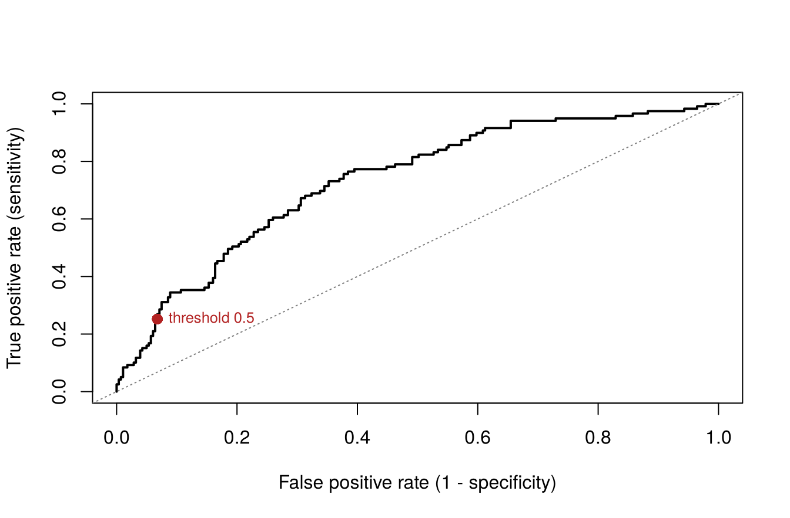
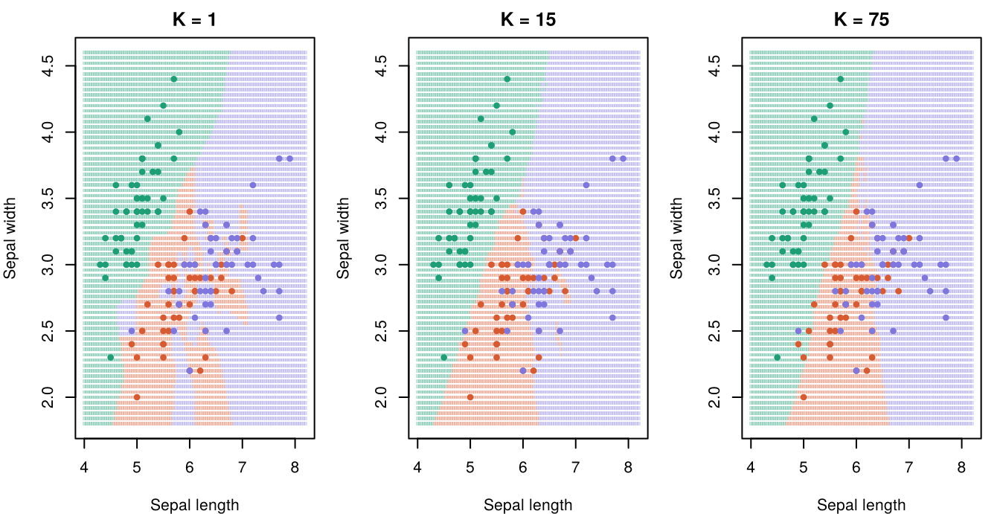
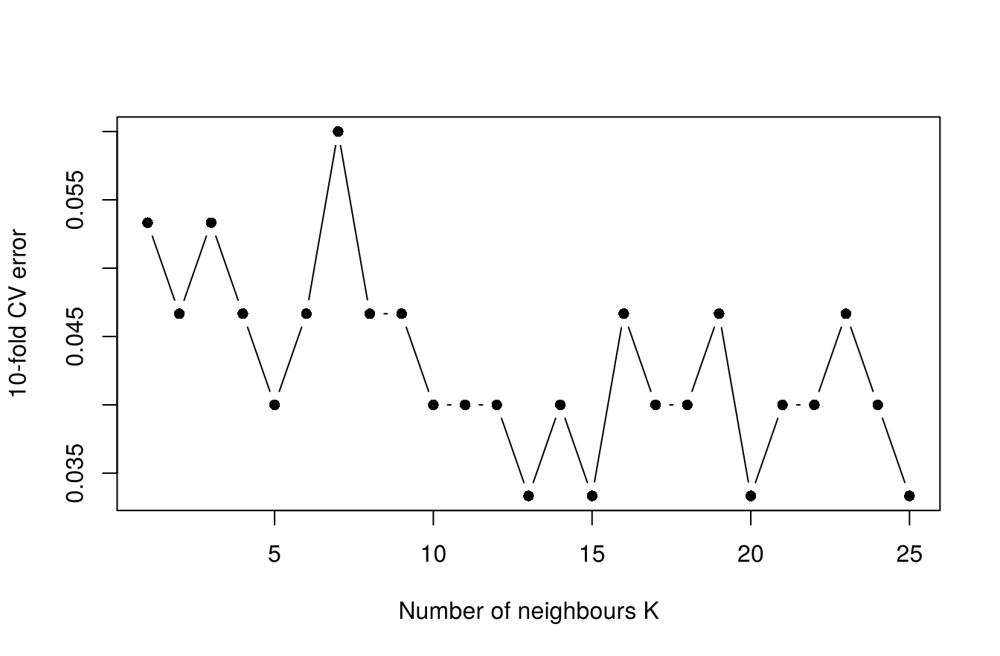
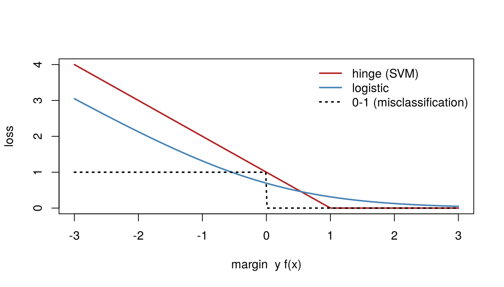

set.seed(8)
n <- 400
plots <- data.frame(
light = runif(n, 0.02, 0.80),
moisture = runif(n, 10, 45),
pH = runif(n, 3.8, 7.2),
litter = runif(n, 0, 8)
)
wet <- plots$moisture >= 25
eta <- -1.8 + 4.0 * plots$light * wet + 1.2 * (plots$pH > 5.5) - 0.15 * plots$litter
plots$p_true <- plogis(eta)
plots$moss <- factor(rbinom(n, 1, plots$p_true), labels = c("absent", "present"))
fit_moss <- glm(moss ~ light + moisture + pH + litter, data = plots, family = binomial)
score <- predict(fit_moss, type = "response")Evaluating classifiers, KNN and SVM
Margin legend
DEF — definition KEY — key idea to remember ↪ — bridge to another day ⚠ — common pitfall
Day 6 gave one way to classify, logistic regression. Today adds two more that think in terms of geometry instead of probability: nearest neighbours and support vector machines. Before comparing classifiers, we need to know how to judge them.
Evaluating a classifier
We use a simulated survey of 400 forest plots with the binary response “indicator moss present”. The true probability of presence is stored for every plot, so the best possible performance can be computed.
⚠ p_true is in the data frame, so a formula such as moss ~ . would use the true probability as a predictor. Leakage is rarely so obvious in real data: an identifier correlated with treatment, or a variable measured after the outcome, does the same damage quietly.
The confusion matrix
pred <- factor(ifelse(score > 0.5, "present", "absent"), levels = levels(plots$moss))
cm <- table(predicted = pred, observed = plots$moss)
cm#> observed
#> predicted absent present
#> absent 262 89
#> present 19 30TP <- cm["present", "present"]; FN <- cm["absent", "present"]
FP <- cm["present", "absent"]; TN <- cm["absent", "absent"]
c(accuracy = (TP + TN) / sum(cm),
sensitivity = TP / (TP + FN),
specificity = TN / (TN + FP),
prevalence = mean(plots$moss == "present"))#> accuracy sensitivity specificity prevalence
#> 0.7300000 0.2521008 0.9323843 0.2975000DEF — Sensitivity: of all true positives, the fraction found. Specificity: of all true negatives, the fraction correctly ruled out.
The two kinds of error are rarely equally serious: missing a disease and raising a false alarm have different costs, and a single accuracy figure averages them away. Accuracy is interpretable only in the light of the base rate. If 90 % of samples are normal, a classifier that always says “normal” is 90 % accurate and useless.
For more than two classes, each class in turn is treated as “positive” and all others as “negative”.
⚠ This confusion matrix is computed on the data used for fitting, so it is optimistic. Use held-out data or cross-validation (Day 7).
The threshold and the ROC curve
A classifier usually produces a score, which is then compared with a threshold. The threshold is a decision, not a property of the model, and moving it trades sensitivity against specificity.
roc_points <- function(score, pos) {
thr <- c(Inf, sort(unique(score), decreasing = TRUE))
data.frame(threshold = thr,
tpr = vapply(thr, function(t) sum(score >= t & pos) / sum(pos), 0),
fpr = vapply(thr, function(t) sum(score >= t & !pos) / sum(!pos), 0))
}
pos <- plots$moss == "present"
r <- roc_points(score, pos)
plot(r$fpr, r$tpr, type = "l", lwd = 2, xlim = c(0, 1), ylim = c(0, 1),
xlab = "False positive rate (1 - specificity)",
ylab = "True positive rate (sensitivity)")
abline(0, 1, lty = 3, col = "grey50")
points(FP / (FP + TN), TP / (TP + FN), pch = 16, col = "firebrick", cex = 1.3)
text(FP / (FP + TN), TP / (TP + FN), "threshold 0.5", pos = 4, cex = 0.8, col = "firebrick")
DEF — The ROC curve plots the true positive rate against the false positive rate as the threshold varies.
AUC and the ceiling on performance
auc <- function(score, pos) {
mean(outer(score[pos], score[!pos], ">")) +
0.5 * mean(outer(score[pos], score[!pos], "=="))
}
c(model = auc(score, pos),
ceiling = auc(plots$p_true, pos),
bayes_error = mean(pmin(plots$p_true, 1 - plots$p_true)))#> model ceiling bayes_error
#> 0.7327970 0.8147672 0.2397594The area under the curve has a direct reading: the probability that a randomly chosen positive receives a higher score than a randomly chosen negative, with ties counted as half. A value of 0.5 is random ranking.
Because the true probabilities are known, the highest AUC any method could attain can be computed, as can the lowest error rate, the Bayes error rate. Neither reaches perfection: moss presence is genuinely stochastic.
KEY — Compare performance against the achievable ceiling, not against perfection.
⚠ A ROC curve below the diagonal almost always means that the positive class has been reversed. Check the factor level order.
K-nearest neighbours
The idea
KNN makes one assumption: points that are close in feature space tend to have similar outcomes. To predict a new point:
- compute its distance to all training points;
- select the \(K\) closest;
- take a majority vote (classification) or the average (regression).
There is no training phase and no parameters are estimated. The data are the model.
DEF — \(K\) is a hyperparameter: it is set before fitting and chosen by cross-validation. It is the number of neighbours, not the number of clusters as in K-means.
Distances are those of Day 4: Euclidean by default, and Minkowski in general.
KNN from scratch
The whole method is a distance computation, a sort and a vote.
knn_scratch <- function(train, test, cl, k) {
apply(test, 1, function(x) {
d <- sqrt(colSums((t(train) - x)^2)) # distance to every training point
nearest <- order(d)[1:k] # indices of the k closest
names(which.max(table(cl[nearest]))) # majority vote
})
}
Xi <- scale(iris[, 1:4])
set.seed(1)
id <- sample(150, 100) # 100 flowers for training
mine <- knn_scratch(Xi[id, ], Xi[-id, ], iris$Species[id], k = 5)
ref <- class::knn(Xi[id, ], Xi[-id, ], iris$Species[id], k = 5)
c(agreement_with_class_knn = mean(mine == ref),
test_accuracy = mean(mine == iris$Species[-id]))#> agreement_with_class_knn test_accuracy
#> 1.00 0.94The cost structure is unusual. “Training” costs nothing. Every prediction costs of the order of \(np\) operations for the distances, plus a sort. For large reference sets, software uses tree structures or approximate neighbour search to avoid computing all \(n\) distances.
DEF — Formally, KNN estimates the class probability by a local average: \(\hat P(y = c \mid x) = \frac1K\sum_{i \in N_K(x)} 1[y_i = c]\), where \(N_K(x)\) is the set of the \(K\) nearest training points.
\(K\) is the bias–variance dial
library(class)
d <- iris[, c("Sepal.Length", "Sepal.Width", "Species")]
g <- expand.grid(Sepal.Length = seq(4, 8.2, by = 0.04),
Sepal.Width = seq(1.8, 4.6, by = 0.04))
cols <- c(setosa = "#1D9E75", versicolor = "#D85A30", virginica = "#7F77DD")
op <- par(mfrow = c(1, 3), mar = c(4, 4, 2, 1))
set.seed(1)
for (k in c(1, 15, 75)) {
p <- knn(d[, 1:2] + rnorm(300, 0, 0.001), g, d$Species, k = k)
plot(g, col = adjustcolor(cols[p], 0.25), pch = 15, cex = 0.5,
main = paste("K =", k), xlab = "Sepal length", ylab = "Sepal width")
points(d[, 1:2], col = cols[d$Species], pch = 19, cex = 0.7)
}
par(op)With \(K = 1\) the boundary follows every point: low bias, high variance. With a large \(K\) the boundary is smooth: higher bias, lower variance. The tiny amount of noise added above breaks ties between flowers with identical measurements.
Practical points
X <- scale(iris[, 1:4]) # distances need comparable units
y <- iris$Species
set.seed(264)
fold <- sample(rep(1:10, length.out = nrow(X)))
err <- sapply(1:25, function(k) {
mean(sapply(1:10, function(j) {
p <- knn(X[fold != j, ], X[fold == j, ], y[fold != j], k = k)
mean(p != y[fold == j])
}))
})
plot(1:25, err, type = "b", pch = 16,
xlab = "Number of neighbours K", ylab = "10-fold CV error")
⚠ Scaling must be learned from the training folds. Here the data are scaled once for simplicity. With few features the effect is negligible, but with supervised preprocessing, such as selecting genes, doing this outside the folds gives severely optimistic errors.
- Scale the features. A gene with a large range otherwise dominates every distance.
- Irrelevant features hurt. Every noise dimension adds to all distances. With thousands of genes, points become almost equidistant, and “nearest” loses its meaning. This is the curse of dimensionality.
- Prediction is slow, because all distances must be computed for each new point.
Support vector machines
A hyperplane as a decision rule
A linear classifier uses a score \(f(\mathbf{x}) = \beta_0 + \boldsymbol\beta^\top\mathbf{x}\) and predicts by its sign. The points with \(f(\mathbf{x}) = 0\) form a hyperplane.
If \(\mathbf{x}_1\) and \(\mathbf{x}_2\) both lie on the hyperplane, subtracting their equations gives \(\boldsymbol\beta^\top(\mathbf{x}_1 - \mathbf{x}_2) = 0\). So \(\boldsymbol\beta\) is orthogonal to the hyperplane, and the signed distance from a point to it is a projection (Appendix B):
\[ d(\mathbf{x}) = \frac{\beta_0 + \boldsymbol\beta^\top\mathbf{x}}{\lVert\boldsymbol\beta\rVert} . \]
Maximal margin
With labels \(y_i \in \{-1, +1\}\) and separable classes, infinitely many hyperplanes separate them. The SVM chooses the one farthest from the nearest points. Scaling \(\boldsymbol\beta\) so that the closest points have \(y_i f(\mathbf{x}_i) = 1\) makes the margin \(1/\lVert\boldsymbol\beta\rVert\), and maximising it becomes:
\[ \min_{\boldsymbol\beta,\beta_0}\ \tfrac12\lVert\boldsymbol\beta\rVert^2 \qquad\text{subject to}\qquad y_i(\beta_0 + \boldsymbol\beta^\top\mathbf{x}_i) \ge 1 . \]
DEF — Support vectors are the points on or inside the margin. Only these determine the boundary; the others could be removed without changing it.
Soft margin
Real classes overlap. A slack variable \(\xi_i \ge 0\) lets a point violate the margin, at a cost:
\[ \min\ \tfrac12\lVert\boldsymbol\beta\rVert^2 + C\sum_{i=1}^n \xi_i \qquad\text{subject to}\qquad y_i(\beta_0 + \boldsymbol\beta^\top\mathbf{x}_i) \ge 1 - \xi_i . \]
Here \(\xi_i = 0\) means correctly classified and outside the margin, \(0 < \xi_i < 1\) inside the margin, and \(\xi_i \ge 1\) misclassified.
KEY — This is complexity + C × error, the same trade as AIC on Day 5 and the penalties of Day 9. A large \(C\) tolerates few violations and risks overfitting. A small \(C\) gives a wider margin and more bias.
The same problem as a loss function
The soft-margin problem can be rewritten without constraints. At the optimum each slack is as small as its constraint allows, \(\xi_i = \max\big(0,\ 1 - y_i f(\mathbf{x}_i)\big)\), so the SVM minimises
\[ \tfrac12\lVert\boldsymbol\beta\rVert^2 + C\sum_{i=1}^n \max\big(0,\ 1 - y_i f(\mathbf{x}_i)\big). \]
The second term is called the hinge loss. It is a function of the margin \(y f(\mathbf{x})\), which is positive for a correct classification and large for a confident one. Logistic regression, with labels coded \(\pm 1\), minimises the loss \(\ln(1 + e^{-y f(\mathbf{x})})\) instead. Plotted together, the two are close relatives.
m <- seq(-3, 3, length.out = 300)
plot(m, pmax(0, 1 - m), type = "l", lwd = 2, col = "firebrick",
xlab = "margin y f(x)", ylab = "loss")
lines(m, log(1 + exp(-m)), lwd = 2, col = "steelblue")
lines(m, as.numeric(m < 0), lwd = 2, lty = 3)
legend("topright", c("hinge (SVM)", "logistic", "0-1 (misclassification)"), bty = "n",
lwd = 2, lty = c(1, 1, 3), col = c("firebrick", "steelblue", "black"))
KEY — Both losses are convex stand-ins for the misclassification count, which cannot be optimised directly. The hinge loss is exactly zero beyond the margin: points classified correctly with room to spare have no influence at all. That is the loss-function view of “only support vectors matter”.
Seen this way, the SVM can be fitted by the gradient descent of Appendix C. The hinge has a kink at 1, so one uses a subgradient: a point inside the margin contributes \(-y_i\mathbf{x}_i\), any other point contributes nothing.
library(e1071)
set.seed(4)
n_s <- 200
Xs <- cbind(rnorm(n_s), rnorm(n_s))
ys <- ifelse(Xs[, 1] + 0.5 * Xs[, 2] + rnorm(n_s, 0, 0.7) > 0, 1, -1)
svm_subgradient <- function(X, y, C = 1, iters = 20000) {
b <- rep(0, ncol(X)); b0 <- 0
for (t in seq_len(iters)) {
inside <- drop(y * (b0 + X %*% b)) < 1 # margin violated
g <- b - C * colSums(X[inside, , drop = FALSE] * y[inside])
g0 <- - C * sum(y[inside])
step <- 1 / (100 + t) # decreasing step size
b <- b - step * g
b0 <- b0 - step * g0
}
c(intercept = b0, b1 = b[1], b2 = b[2])
}
w_sub <- svm_subgradient(Xs, ys)
fit_s <- svm(Xs, factor(ys), kernel = "linear", cost = 1, scale = FALSE)
w_lib <- c(-fit_s$rho, drop(t(fit_s$coefs) %*% fit_s$SV))
# e1071 orients the hyperplane by the first label it meets; make +1 the positive side
dv <- attr(predict(fit_s, Xs, decision.values = TRUE), "decision.values")
if (colnames(dv)[1] == "-1/1") w_lib <- -w_lib
round(rbind(subgradient_descent = w_sub, e1071 = w_lib), 3)#> intercept b1 b2
#> subgradient_descent -0.111 1.536 0.856
#> e1071 -0.111 1.537 0.857Twenty lines of code reproduce the coefficients of the library to two decimals. The library reaches the exact optimum by a different route, described next.
Where the support vectors come from: the dual problem
The constrained problem is solved with Lagrange multipliers, as in the derivation of PCA on Day 3, now with one multiplier \(\alpha_i \ge 0\) per margin constraint and one \(\mu_i \ge 0\) per constraint \(\xi_i \ge 0\):
\[ \mathcal{L} = \tfrac12\lVert\boldsymbol\beta\rVert^2 + C\sum_i\xi_i - \sum_i\alpha_i\big[y_i(\beta_0 + \boldsymbol\beta^\top\mathbf{x}_i) - 1 + \xi_i\big] - \sum_i\mu_i\xi_i . \]
Setting the derivatives with respect to \(\boldsymbol\beta\), \(\beta_0\) and \(\xi_i\) to zero gives three conditions:
\[ \boldsymbol\beta = \sum_i\alpha_i y_i\,\mathbf{x}_i, \qquad \sum_i\alpha_i y_i = 0, \qquad \alpha_i = C - \mu_i \;\Rightarrow\; 0 \le \alpha_i \le C . \]
The first is the important one: the normal vector of the hyperplane is a weighted sum of the observations. The optimality conditions further require \(\alpha_i\big[y_i f(\mathbf{x}_i) - 1 + \xi_i\big] = 0\) for every \(i\). A point strictly outside the margin has a positive bracket, so its \(\alpha_i\) must be zero. Only points on or inside the margin can have \(\alpha_i > 0\): these are the support vectors. Substituting the conditions back into \(\mathcal{L}\) eliminates \(\boldsymbol\beta\) and leaves the dual problem, in the \(\alpha_i\) alone:
\[ \max_{\boldsymbol\alpha}\ \sum_i\alpha_i - \tfrac12\sum_i\sum_j\alpha_i\alpha_j\,y_iy_j\,\mathbf{x}_i^\top\mathbf{x}_j \qquad\text{subject to}\qquad 0 \le \alpha_i \le C,\quad \sum_i\alpha_iy_i = 0 . \]
The fitted object stores exactly these quantities, and the conditions can be checked.
alpha_y <- drop(fit_s$coefs) # alpha_i * y_i for the support vectors
c(support_vectors = length(alpha_y),
of_n = n_s,
largest_alpha = max(abs(alpha_y)), # bounded by C = 1
sum_alpha_y = sum(alpha_y), # zero
at_the_bound_C = sum(abs(alpha_y) > 1 - 1e-8))#> support_vectors of_n largest_alpha sum_alpha_y at_the_bound_C
#> 7.500000e+01 2.000000e+02 1.000000e+00 6.106227e-16 7.100000e+01Points with \(\alpha_i = C\) lie inside the margin or on the wrong side; the few with \(0 < \alpha_i < C\) lie exactly on it. In the dual, the data appear only in the dot products \(\mathbf{x}_i^\top\mathbf{x}_j\), and this is the opening that the next section uses.
Kernels
The solution can be written using only dot products between observations:
\[ f(\mathbf{x}) = \beta_0 + \sum_{i=1}^n \alpha_i y_i\, \mathbf{x}_i^\top\mathbf{x}, \]
with \(\alpha_i \ne 0\) only for support vectors. Since the data enter only through dot products, the dot product can be replaced by a kernel \(k(\mathbf{x}, \mathbf{z})\), which equals a dot product in some other, possibly very high-dimensional, space. That space never has to be computed.
| Kernel | \(k(\mathbf{x},\mathbf{z})\) | Character |
|---|---|---|
| linear | \(\mathbf{x}^\top\mathbf{z}\) | often sufficient when \(p \gg n\) |
| polynomial | \((\mathbf{x}^\top\mathbf{z} + c)^d\) | curved boundaries |
| radial (RBF) | \(\exp(-\gamma\lVert\mathbf{x}-\mathbf{z}\rVert^2)\) | local, very flexible |
↪ The radial kernel is a smooth version of KNN: a training point’s influence decays with distance, at a rate set by \(\gamma\).
That a kernel really is a dot product in another space can be checked by hand for a small case. In two dimensions the polynomial kernel \((\mathbf{x}^\top\mathbf{z} + 1)^2\) corresponds to the six-dimensional feature map
\[ \phi(\mathbf{x}) = \big(1,\ \sqrt2\,x_1,\ \sqrt2\,x_2,\ x_1^2,\ x_2^2,\ \sqrt2\,x_1x_2\big), \]
as expanding the square shows.
phi <- function(x) c(1, sqrt(2) * x[1], sqrt(2) * x[2], x[1]^2, x[2]^2, sqrt(2) * x[1] * x[2])
a <- c(1, 2); z <- c(3, -1)
c(kernel = (sum(a * z) + 1)^2, explicit_feature_map = sum(phi(a) * phi(z)))#> kernel explicit_feature_map
#> 4 4The kernel costs one dot product in two dimensions; the explicit route needs six. For a polynomial of degree \(d\) in \(p\) variables the feature space has \(\binom{p+d}{d}\) dimensions, and for the radial kernel it is infinite-dimensional, yet the kernel is still a single evaluation. Because the dual involves only kernel values, an SVM pays for the number of observations, not for the dimension of the feature space, which suits the \(p \gg n\) data of bioinformatics.
An SVM in R
The Heart data contain clinical measurements of 303 patients and the presence of heart disease.
library(e1071)
heart <- na.omit(read.csv("Heart.csv")[, -1])
heart[c("Sex", "Fbs", "RestECG", "ExAng", "ChestPain", "Thal", "AHD")] <-
lapply(heart[c("Sex", "Fbs", "RestECG", "ExAng", "ChestPain", "Thal", "AHD")], factor)
set.seed(123)
train_id <- sample(nrow(heart), floor(0.7 * nrow(heart)))
tr <- heart[train_id, ]; te <- heart[-train_id, ]
baseline <- max(prop.table(table(te$AHD)))
svm_lin <- svm(AHD ~ ., data = tr, kernel = "linear", cost = 1, scale = TRUE)
c(support_vectors = svm_lin$tot.nSV, training_n = nrow(tr))#> support_vectors training_n
#> 77 207tab <- table(predicted = predict(svm_lin, te), observed = te$AHD)
tab#> observed
#> predicted No Yes
#> No 43 10
#> Yes 3 34c(accuracy = sum(diag(tab)) / sum(tab), majority_class_baseline = baseline)#> accuracy majority_class_baseline
#> 0.8555556 0.5111111The cost and \(\gamma\) are tuned by cross-validation on the training data only.
set.seed(123)
tuned <- tune.svm(AHD ~ ., data = tr, kernel = "radial",
cost = 2^(-1:4), gamma = 2^(-6:-1))
tuned$best.parameters#> gamma cost
#> 19 0.015625 4tab_rbf <- table(predicted = predict(tuned$best.model, te), observed = te$AHD)
tab_rbf#> observed
#> predicted No Yes
#> No 42 9
#> Yes 4 35c(accuracy = sum(diag(tab_rbf)) / sum(tab_rbf))#> accuracy
#> 0.8555556⚠ An SVM outputs a signed distance, not a probability. A ROC curve can be built from the decision values, but turning them into probabilities needs an extra calibration step.
A single train/test split of about 90 patients is noisy, as Day 7 showed, so a difference of a few patients between two models is not evidence.
Strengths and weaknesses
| KNN | SVM | Logistic regression | |
|---|---|---|---|
| Boundary | any shape | linear, or curved with a kernel | linear |
| Tuning | \(K\) | \(C\), kernel, \(\gamma\) | none |
| Scaling needed | yes | yes | no |
| Output | vote fraction | signed distance | probability |
| Interpretable coefficients | no | linear kernel only, partly | yes |
| Many irrelevant features | poor | fairly robust | needs a penalty (Day 9) |
Reading in ISLR
| Topic | ISLR |
|---|---|
| K-nearest neighbours | §2.2.3, §3.5, §4.7.6 |
| Confusion matrices and ROC | §4.4.2 |
| Maximal margin and support vector classifiers | §9.1, §9.2 |
| Support vector machines and kernels | §9.3 |
| Relationship to logistic regression | §9.5 |